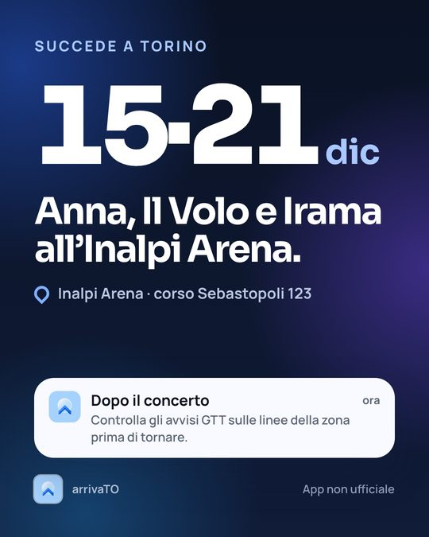

Come arrivare › Inalpi Arena
Come arrivare all'Inalpi Arena con i mezzi
Prendi il tram 10 direzione Mirafiori Sud e scendi a Filadelfia: da lì sono 5–8 minuti a piedi. Da Porta Susa ci vogliono circa 25 minuti in tutto.
Da dove parti
Da Porta Susa · circa 25 minuti
- Tram 10 direzione Mirafiori Sud dalla fermata Questura (29), a pochi passi dalla stazione.
- Scendi a Filadelfia (390), dopo 9 fermate.
- A piedi fino all'arena, 5–8 minuti.
Da Porta Nuova · circa 25 minuti
- Bus 58/ direzione Città Giardino dalla fermata Porta Nuova (252) fino a Politecnico (376), 4 fermate.
- Tram 10 direzione Mirafiori Sud fino a Filadelfia (390).
Dal centro (piazza Castello) · circa 35 minuti
Bus 56 dalla fermata Castello (472) fino a XVIII Dicembre, poi tram 10 fino a Filadelfia.
Il ritorno
Tram 10 dalla fermata Filadelfia (391), direzione piazza Statuto: in 9 fermate sei a Questura, vicino a Porta Susa. Per Porta Nuova c'è il bus 12 dalla fermata Filadelfia (315), un po' più lontana, circa 15 minuti a piedi.
Dopo un concerto le corse si diradano: martedì 15 dicembre 2026, dopo le 23:30, il tram 10 parte da Filadelfia alle 23:38, alle 00:03 e alle 00:28. Controlla il prossimo passaggio prima di uscire.
Le fermate vicino all'arena
| Fermata | Codice | Linee e direzione |
|---|---|---|
| Filadelfia | 390 | 10 91 verso Mirafiori Sud |
| Filadelfia | 391 | 10 verso il centro, 91 verso Borgo Vittoria |
| Sebastopoli | 388, 389 | 10 91 |
| Agnelli Est | 3135 | 17 verso Rivoli, 17/ verso Barocchio |
| Agnelli Est | 3136 | 17 17/ verso Ospedali |
In questi giorni
Concerti di dicembre 2026: Anna martedì 15, Cesare Cremonini mercoledì 16, Il Volo sabato 19, Irama lunedì 21. Data e orario sono quelli annunciati: controllali sul biglietto. Nelle sere di concerto GTT può cambiare le linee della zona: guarda gli avvisi su gtt.to.it o in arrivaTO.

Domande frequenti
Come si arriva all'Inalpi Arena con i mezzi?
Il modo più semplice è il tram 10 direzione Mirafiori Sud fino alla fermata Filadelfia, poi 5–8 minuti a piedi. Da Porta Susa sono circa 25 minuti in tutto.
Come arrivo all'Inalpi Arena da Porta Nuova?
Bus 58/ dalla fermata Porta Nuova (252) fino a Politecnico, poi tram 10 fino a Filadelfia: circa 25 minuti, a piedi compresi.
Come torno dopo un concerto all'Inalpi Arena?
Tram 10 dalla fermata Filadelfia (391), direzione piazza Statuto, fino a Questura, vicino a Porta Susa. Martedì 15 dicembre 2026, dopo le 23:30, parte alle 23:38, alle 00:03 e alle 00:28. Per Porta Nuova c'è il bus 12 dalla fermata Filadelfia (315).
Quali linee passano vicino all'Inalpi Arena?
Il tram 10 e il bus 91 alle fermate Filadelfia e Sebastopoli, i bus 17 e 17/ alla fermata Agnelli Est.
Dove compro il biglietto del bus?
Il biglietto GTT si compra sui canali ufficiali GTT. arrivaTO non vende biglietti.
Con arrivaTO
arrivaTO è un'app gratuita, senza pubblicità e senza account: mostra quando passano bus, tram e metro GTT alla fermata, calcola il percorso e ti avvisa quando scendere.